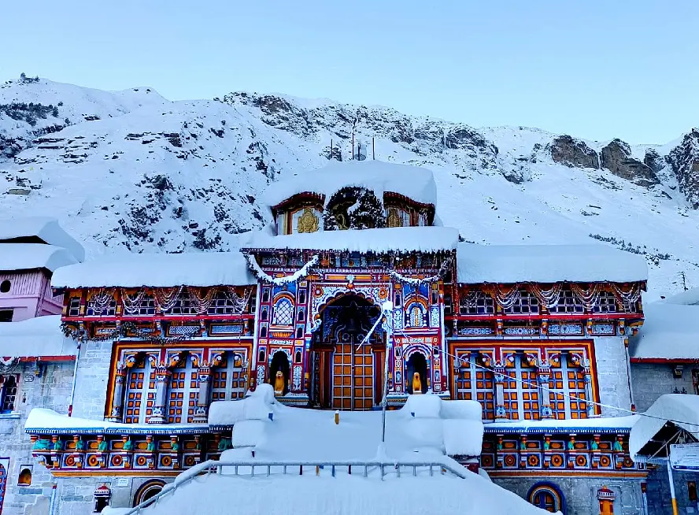
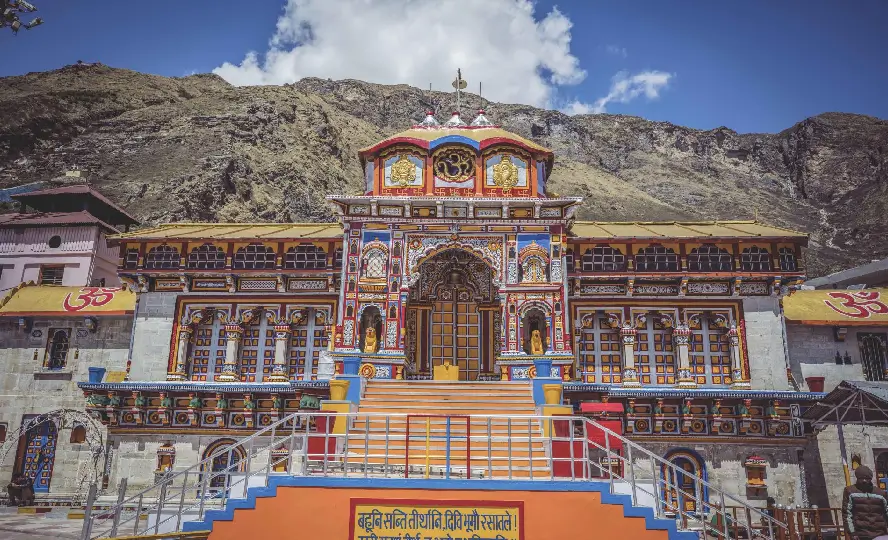
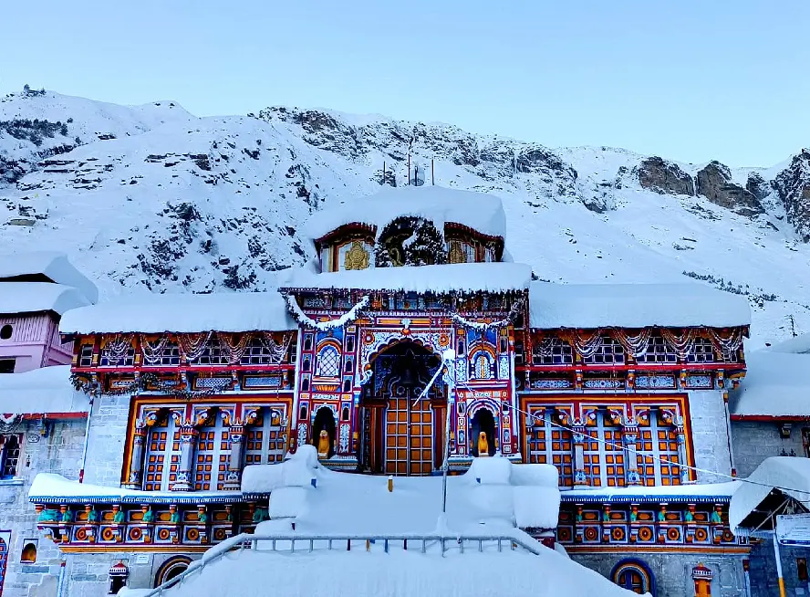
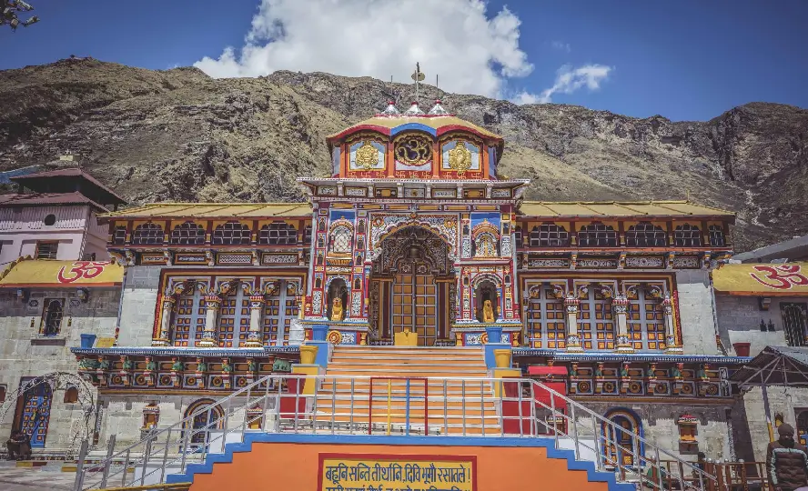
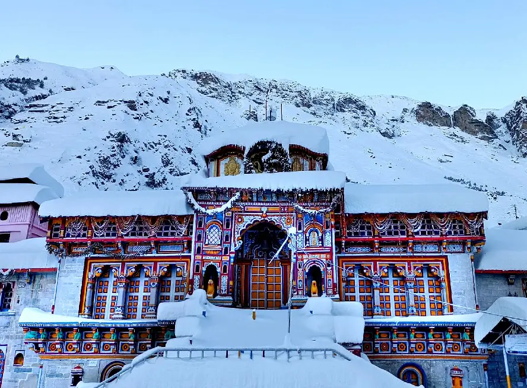
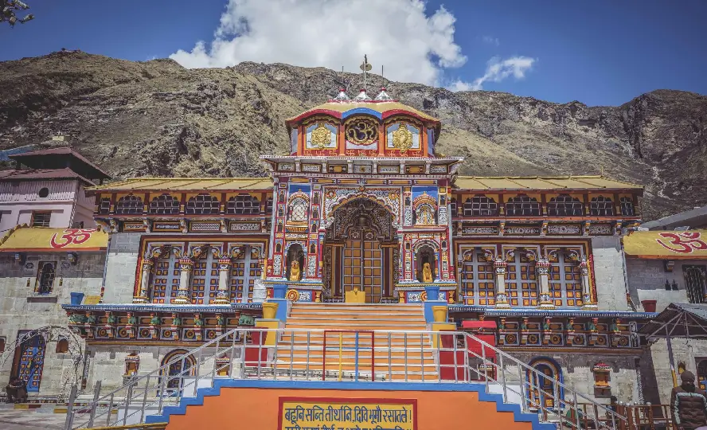

Badrinath Temple


The temple stands at an altitude of 3,133 meters (10,279 feet) above sea level, on the banks of the sacred Alaknanda River. Surrounded by snow-capped peaks like Neelkanth and flanked by Nar and Narayana mountains, its setting is breathtakingly serene.
Badrinath Temple is a classic example of North Indian temple architecture. The structure rises about 15 meters (49 feet) high, topped with a gold-gilded cupola. Its vibrant main entrance, known as Singhdwar, is adorned with intricate carvings and bright colors. The temple is divided into three main parts:
The halls and pillars are richly decorated with carvings depicting scenes from Hindu mythology, floral motifs, and geometric patterns.
The sanctum enshrines a 1 meter (3.3 feet) tall black stone idol of Lord Badrinarayan (Vishnu) in a meditative pose, believed to be self-manifested. The idol sits under a golden canopy beneath a Badri tree, holding a conch and chakra. The temple complex also houses images of Lakshmi, Garuda, Kubera, and other deities.
The temple's origins trace back to the Vedic period, with Adi Shankaracharya credited for reviving and re-establishing it as a Hindu shrine in the 8th-9th century. The present structure was built by Garhwal kings in the 16th century. Legends say Shankaracharya discovered the idol in the Alaknanda River and enshrined it here, restoring the site's spiritual prominence.
Badrinath is also associated with many mythological tales, including the Pandavas' journey to heaven and the meditations of sages like Narada. The temple is one of the 108 Divya Desams (holy shrines) of Lord Vishnu and is believed to grant salvation to devotees.
The temple is open from April/May to November due to extreme winter conditions. Major festivals include the Badri Kedar Festival and Mata Murti Ka Mela, celebrated with great devotion and color.